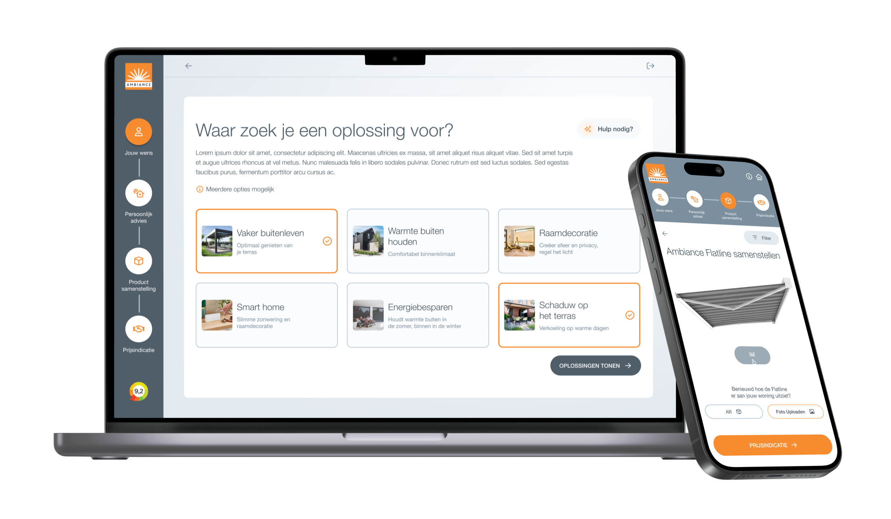

Ambiance Zonwering Retail · Lead UX
Een keuzehulp die klanten zelfstandig naar het juiste product brengt
Van wens en advies tot samenstelling, AR-visualisatie en prijsindicatie.
Getest met consumenten; basis voor de nieuwe customer journey van 41 vestigingen.
Bekijk case